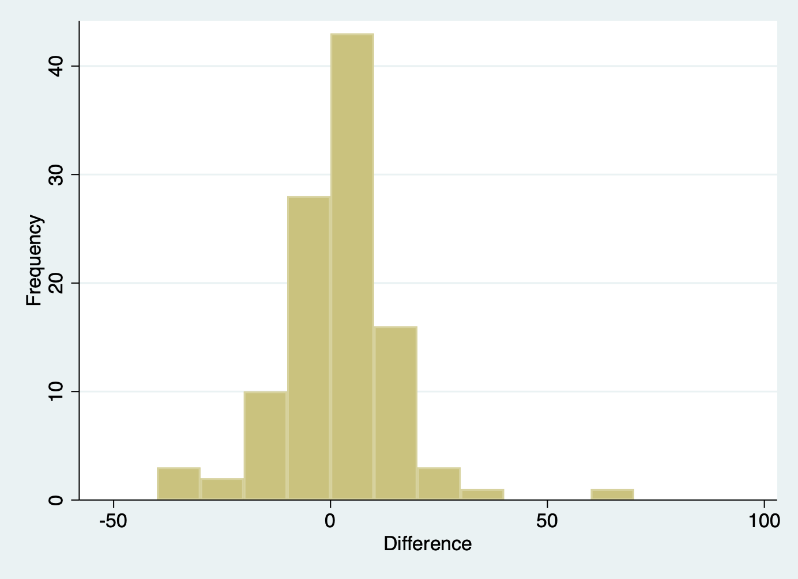

Learning objectives
By the end of this module you will be able to:
- Decide whether to use an independent samples t-test or a paired t-test to compare two the means of two groups;
- Conduct and interpret the results from an independent samples t-test;
- Describe the assumptions of an independent samples t-test;
- Conduct and interpret the results from a paired t-test;
- Describe the assumptions of a paired t-test;
- Conduct an independent samples t-test and a paired t-test in Stata;
- Report results and provide a concise summary of the findings of statistical analyses.
Optional readings
Kirkwood and Sterne (2001); Sections 7.1 to 7.5. [UNSW Library Link]
Bland (2015); Section 10.3. [UNSW Library Link]
Acock (2010); Section 7.7, 7.8.
5.1 Introduction
In Module 4, a one-sample t-test was used for comparing a single mean to a hypothesised value. In health research, we often want to compare the means between two groups. For example, in an observational study, we may want to compare cholesterol levels in people who are normal weight to the levels in people who are overweight. In a clinical trial, we may want to compare cholesterol levels in people who have been randomised to a dietary modification or to usual care. In this module, we show how to compare the means of two groups where the analysis variable is normally distributed.
From the decision tree presented in the Appendix, we can see that if we have a continuous outcome measure and two categorical groups that are not related, i.e. a binary exposure measurement, the test for such data is an independent samples t-test. The test is also sometimes called a 2-sample t-test.
However, in research, data are often ‘paired’ or ‘matched’, that is the two data points are related to one another. This occurs when measurements are taken:
- From each participant on two occasions, e.g. at baseline and follow-up in an experimental study or in a longitudinal cohort study;
- From related people, e.g. a mother and daughter or a child and their sibling;
- From related sites in the same person, e.g. from both limbs, eyes or kidneys;
- From matched participants e.g. in a matched case-control study;
- In cross-over clinical trials where the patient receives both drugs, often in random order.
An independent samples t-test cannot be used for analysing paired or matched data because the assumption that the two groups are independent is violated. Treating paired or matched measurements as independent samples would artificially inflate the sample size and lead to inaccurate P values. When the data are related in a paired or matched way and the outcome is continuous, a paired t-test is the appropriate statistic to use if the data are normally distributed.
5.2 Independent samples t-test
An independent samples t-test is a parametric test that is used to assess whether the mean values of two groups are different from one another. Thus, the test is used to assess whether two mean values are similar enough to have come from the same population or whether the difference between them is so large that the two groups can be considered to have come from separate populations with different characteristics.
The null hypothesis is that the mean values of the two groups are not different, that is:
H0: (Mean2 \(-\) Mean1) = 0
Rejecting the null hypothesis using an independent samples t-test indicates that the difference between the means of the two groups is large in relation to the variability in the samples and is unlikely to be due to chance or to sampling variation.
5.2.1 Assumptions for an independent samples t-test
The assumptions that must be met before an independent samples t-test can be used are:
- The two groups are independent
- The measurements are independent
- The outcome variable must be continuous and must be normally distributed in each group
- The variance in the two groups is similar (homogenous)
The first two assumptions are determined by the study design. The two samples must be independent, i.e. if a person is in one group then they cannot be included in the other group, and the measurements within a sample must be independent, i.e. each person must be included in their group once only.
The third assumption of normality is important although t-tests are robust to some degree of non-normality as long as there are no influential outliers and, more importantly, if the sample size is large. We examined how to assess normality in Module 2. If the data are not normally distributed, it may be possible to transform them using a mathematical function such as a logarithmic transformation. If not, then we may need to use non-parametric tests. This is examined in Module 9.
The final assumption is homogeneity of variance between the groups. This can be verified by checking that the standard deviation (square root of the variance) of each group is similar. If the variances are different, then Welch’s t-test, an alternative version of the t-test can be used.
5.2.2 Worked Example
In an observational study of a random sample of 100 full term babies from the community, birth weight and gender were measured. There were 44 male babies and 56 female babies in the sample. The research question asked whether there was a difference in birth weights between boys and girls. The two groups are independent of each other and therefore an independent samples t-test can be used to test the null hypothesis that there is no difference in weight between the genders.
Some preliminary descriptive statistics of the distribution of the variable of interest in each group should always be obtained before a t-test is undertaken to ensure that the assumptions are met. Box plots and histograms are ideal for this. Histrograms and box plots of the data obtained in Stata using Graphics > Box plot is shown in Figure 5.1. The datasets mod05_birthweight.dta and mod05_birthweight.rds are available on Moodle.
The plots show that the data are approximately normally distributed: the histograms are relatively bell shaped and symmetric, and the boxes are fairly symmetrical, there are no outliers, and the spread is similar in both groups as the similar length of the whiskers suggesting that the variance is homogenous.
We can also describe the data using summary statistics:
Characteristic |
Female |
Male |
| Birthweight | ||
| N | 56 | 44 |
| Mean (SD) | 3.59 (0.36) | 3.42 (0.35) |
| Median (IQR) | 3.53 (3.33, 3.87) | 3.43 (3.16, 3.63) |
| Range | 2.95, 4.25 | 2.75, 4.10 |
The table shows that girls have a mean weight of 3.59 kg (SD 0.36) and boys have a mean weight of 3.42 kg (SD 0.35) with females being heavier than males. The variabilities of birth weight, as indicated by the standard deviations, are similar.
5.2.3 Conducting and interpreting an independent samples t-test
An independent samples t-test provides us with a t statistic from which we can compute a P value. The computation of the t statistic is as follows:
\[t = \frac{{\overline{x}}_{1} - {\overline{x}}_{2}}{SE({\overline{x}}_{1} - {\overline{x}}_{2})}\]
with n1 + n2 – 2 degrees of freedom.
Looking at the formula for the t-statistic, we can see that the \(t\) is an estimate of how different the mean values are compared to the variability of the difference in means. So \(t\) will become larger as the difference in means increases with respect to the variability.
Statistical software will calculate both the t and P values. If the t-value is large, the P value will be small, providing evidence against the null hypothesis of no difference between the groups.
Table 5.2 summarises the results of an independent samples t-test using mod05_birthweight.dta or mod05_birthweight.rds. The process of conducting the t-test is summarised for Stata and R in the following sections.
| Sex | n | Mean (SE) | 95% Confidence Interval |
| Female | 56 | 3.59 (0.049) | 3.49 to 3.68 |
| Male | 44 | 3.42 (0.053) | 3.31 to 3.53 |
| Difference | 0.17 (0.072) | 0.02 to 0.31 |
Here we see that girls are heavier than boys, and the mean difference in weights between the genders is 0.17 kg (95% CI 0.02, 0.31). We are 95% confident that the true mean difference of weight between girls and boys lies between 0.02 and 0.31 kg. Note that this interval does not contain the null value of 0.
Here we are testing the null hypothesis of no difference in mean birthweights between females and males: a two-sided test. The t-value is calculated as 2.30 with 98 degrees of freedom, and yields a two-sided P value of 0.024, providing evidence of a difference in mean birthweight between sex.
5.3 Paired t-tests
If the outcome of interest is the difference in the continuously outcome measurement between each pair of observations, a paired t-test is used. In effect, a paired t-test is used to assess whether the mean of the differences between the two related measurements is significantly different from zero. In this sense, a paired t-test is very closely aligned with a one sample t-test.
When using a paired t-test, the variation between the pairs of measurements is the most important statistic. The variation between the participants is of little interest.
For related measurements, the data for each pair of values must be entered on the same row of the spreadsheet. Thus, the number of rows in the data sheet is the number of pairs of observations. Thus, the effective sample size is the total number of pairs and not the total number of measurements.
5.3.1 Assumptions for a paired t-test
The assumptions for a paired t-test are:
- the outcome variable is continuous
- the differences between the pair of the measurements are normally distributed
For a paired samples t-test, it is important to test whether the differences between the two measurements are normally distributed. If the assumptions for a paired t-test cannot be met, a non-parametric equivalent is a more appropriate test to use (Module 9).
5.3.2 Computing a paired t-test
The null hypothesis for using a paired t-test is as follows:
H0: Mean (Measurement1 – Measurement2) = 0
To compute a t-value, the size of the mean difference between the two measurements is compared to the standard error of the paired differences, i.e.
\[t = \frac{\overline{d}}{SE(\overline{d})}\]
with n–1 degrees of freedom, where n is the number of pairs.
Because the standard error becomes smaller as the sample size becomes larger, the t-value increases as the sample size increases for the same mean difference.
5.3.3 Worked Example 5.2
A total of 107 people were recruited into a study to assess whether ankle blood pressure measured in two different sites would be the same. For each person, systolic blood pressure (SBP) was measured in two sites: dorsalis pedis and tibialis posterior.
The dataset mod05_ankle_bp.xls is available on Moodle. First, we need to compute the pairwise difference between SBP measured in the two sites in Stata using the generate command. This is shown in the Stata manual at the end of this module (Checking the assumptions for a Paired t-test). The distribution of the difference between SBP measured in dorsalis pedis and tibialis posterior is shown in Figure 5.2. The differences approximate a normal distribution and therefore a paired t-test can be used.

The paired t-test can be performed using statistical software, with a summary of the results presented in Table 5.3. We can see that the mean SBP is very similar in the two sites.
| Site | n | Mean (SE) | 95% Confidence Interval |
| Dorsalis pedis | 107 | 116.7 (3.46) | (109.9 to 123.6) |
| Tibialis posterior | 107 | 118.0 (3.43) | (111.2 to 124.8) |
| Difference | 107 | -1.3 (1.31) | (-3.9 to 1.3) |
The t-value is calculated as −0.96 with 106 degrees of freedom, providing a two-sided P-value of 0.34. Thus these data provide no evidence of a difference in systolic blood pressure between the two sites.
Stata notes
5.4 Setting an observation to missing
Setting an incorrect observation to missing is straightforward in Stata by using the Data Editor (make sure you are in Edit mode). Click the cell containing the data to be set to missing, press the Delete key, and the press Enter.
5.5 Checking data for the independent samples t-test
5.5.1 Producing histograms and boxplots by a second variable
To obtain the histograms in Figure 5.1 using the mod05_birthweight.dta data, go to Graphics > Histogram. Select birthweight as the Variable in the Main tab. Next go to the By tab, tick Draw subgraphs for unique values of variable and select gender as the variable as shown below:
Note that we have also improved the basic histogram definition on the Main tab, by defining the Lower limit of first bin to be 2.5, and the Bin width to be 0.25kg:
A similar process is used to obtain the boxplots shown in Figure 5.1: go to Graphics > Box plot. In the graph box – Box plots dialog box, select birthweight as the Variable in the Main tab. Next go to the Categories tab, tick Group 1 and select gender as the Grouping variable as shown below.
Click OK or Submit to produce the box plot.
[Command: graph box birthweight, over(gender)]
5.5.2 Producing split summary statistics
To produce summary statistics for a continuous variable, split by a second binary categorical variable, as in Worked Example 5.1 using mod05_birthweight.dta, go to Statistics > Summaries, tables, and tests > Summary and descriptive statistics > Summary statistics . In the summarize dialog box, select birthweight as the Variable in the Main tab of the dialog box. Next go to the by/if/in tab, tick Repeat command by groups and select gender as the Variable that define groups as shown below.
Click OK or Submit to obtain the output as shown below.
[Command: by gender, sort : summary birthweight]
. by gender, sort : summ birthweight
--------------------------------------------------------------------------------
-> gender = Female
Variable | Obs Mean Std. Dev. Min Max
-------------+---------------------------------------------------------
birthweight | 56 3.587411 .3629788 2.95 4.25
--------------------------------------------------------------------------------
-> gender = Male
Variable | Obs Mean Std. Dev. Min Max
-------------+---------------------------------------------------------
birthweight | 44 3.421364 .3536165 2.75 4.1The output above is easy for copying into a report. You could also submit the summarize command with the detail option to compare the mean with the median (50th percentile) and check the minimum and maximum values for implausible values.
[Command: by gender, sort : sum birthweight , detail]
. by gender, sort : summ birthweight, detail
--------------------------------------------------------------------------------
-> gender = Female
Birthweight
-------------------------------------------------------------
Percentiles Smallest
1% 2.95 2.95
5% 3.03 2.97
10% 3.14 3.03 Obs 56
25% 3.325 3.07 Sum of Wgt. 56
50% 3.53 Mean 3.587411
Largest Std. Dev. .3629788
75% 3.88 4.2
90% 4.15 4.2 Variance .1317536
95% 4.2 4.2 Skewness .2453238
99% 4.25 4.25 Kurtosis 1.962126
--------------------------------------------------------------------------------
-> gender = Male
Birthweight
-------------------------------------------------------------
Percentiles Smallest
1% 2.75 2.75
5% 2.82 2.79
10% 2.85 2.82 Obs 44
25% 3.15 2.85 Sum of Wgt. 44
50% 3.43 Mean 3.421364
Largest Std. Dev. .3536165
75% 3.635 3.94
90% 3.9 3.97 Variance .1250446
95% 3.97 4.06 Skewness -.0895932
99% 4.1 4.1 Kurtosis 2.3257615.6 Independent samples t-test
To carry out an independent sample t-test, go to Statistics > Summaries, tables, and tests > Classical tests of hypotheses > t test (mean-comparison test). In the ttest dialog box, choose the Two-sample using groups button, then select birthweight as the Variable name and gender as the Group variable name as shown below. Because the variances of birthweight are similar for males and females, we can leave the Unequal variances box unchecked.

Click OK or Submit to obtain the following output:
Two-sample t test with equal variances
------------------------------------------------------------------------------
Group | Obs Mean Std. Err. Std. Dev. [95% Conf. Interval]
---------+--------------------------------------------------------------------
Female | 56 3.587411 .0485051 .3629788 3.490204 3.684617
Male | 44 3.421364 .0533097 .3536165 3.313854 3.528873
---------+--------------------------------------------------------------------
combined | 100 3.51435 .0366567 .3665666 3.441615 3.587085
---------+--------------------------------------------------------------------
diff | .1660471 .0723027 .0225648 .3095293
------------------------------------------------------------------------------
diff = mean(Female) - mean(Male) t = 2.2966
Ho: diff = 0 degrees of freedom = 98
Ha: diff < 0 Ha: diff != 0 Ha: diff > 0
Pr(T < t) = 0.9881 Pr(|T| > |t|) = 0.0238 Pr(T > t) = 0.0119[Command: ttest birthweight, by(gender)]
5.7 Checking the assumptions for a Paired t-test
Before performing a paired t-test, you must check that the assumptions for the test have been met. Using the dataset mod05_ankle_bp.xls to show that the difference between the pair of measurements between the sites is normally distributed, we first need to compute a new variable of the differences.
Go to Data > Create new variable.
In the generate – Create a new variable dialog box, assign a name (e.g. difference) to your new variable in the Variable name box. We want to compute difference as sbp_dp − sbp_tp, so we enter this in the Specify a value or an expression box as shown below.

Click Submit or OK.
[Command: generate difference = sbp_dp-sbp_tp]
Check that the new variable appears in your Data Editor window.
Create a histogram with a normal curve under Graphics > Histogram, as shown previously in Module 2. You might want to vary the minimum bar value and the bar width: for example, Figure 5.2 was defined to have a lower limit of -40 and a bin width of 10. We have also requested a Normal curve be plotted in the Density plots tab.

[Command: histogram difference, width(10) start(-40) frequency normal]
5.8 Paired t-Test
To perform a paired t-test we will use the dataset mod05_ankle_bp.xls. For a paired t-test, data must be organised into two variables (i.e. two columns). Go to Statistics > Summaries, tables, and tests > Classical tests of hypotheses > t test (mean-comparison test) as you had for the Independent samples t-test. In the ttest dialog box, choose the Paired button then Select sbp_dp from the dropdown list under First variable and select sbp_tp from the dropdown list under Second variable. The dialog box will look like:
Click Submit or OK. The output will look as follows:
Paired t test
------------------------------------------------------------------------------
Variable | Obs Mean Std. Err. Std. Dev. [95% Conf. Interval]
---------+--------------------------------------------------------------------
sbp_dp | 107 116.729 3.460296 35.79358 109.8686 123.5893
sbp_tp | 107 117.9907 3.431356 35.49422 111.1877 124.7937
---------+--------------------------------------------------------------------
diff | 107 -1.261682 1.311368 13.56489 -3.861596 1.338232
------------------------------------------------------------------------------
mean(diff) = mean(sbp_dp - sbp_tp) t = -0.9621
Ho: mean(diff) = 0 degrees of freedom = 106
Ha: mean(diff) < 0 Ha: mean(diff) != 0 Ha: mean(diff) > 0
Pr(T < t) = 0.1691 Pr(|T| > |t|) = 0.3382 Pr(T > t) = 0.8309[Command: ttest sbp_dp == sbp_tp]
R notes
5.9 Setting an observation to missing
Setting an incorrect observation to missing is straightforward in Stata by using the Data Editor. While RStudio allows browsing a data set as a spreadsheet, it will not let a user replace an observation with a missing value: this should be done using code.
A missing value in R is denoted NA, and this is consistent for any variable type: continuous, string (i.e. character) and even a factor.
Recall the weights data used in Module 2. In viewing a boxplot of weight, we saw an obvious outlier of 700.2kg for ID 58:
library(jmv)
sample <- read.csv("data/examples/mod02_weight_1000.csv")
boxplot(sample$weight, xlab="Weight (kg)", main="Boxplot of 1000 weights")
subset(sample, weight>200)| id | weight |
| 58 | 700 |
We previously set this value to 70.2kg using an ifelse() command. Here, let’s create a new, cleaned weight variable, and set the incorrect value to missing:
sample$weight_clean = ifelse(sample$weight==700.2, NA, sample$weight)Our code will create a new column (called weight_clean) in the sample dataframe. We will test whether weight is equal to 700.2; if this is true, we will assign weight_clean to be NA (i.e. missing), otherwise weight_clean will equal the value of weight.
Let’s view the data from ID 58, and summarise the cleaned weight variable using descriptives() and a boxplot:
subset(sample, sample$id==58)| id | weight | weight_clean |
| 58 | 700 |
descriptives(data=sample, vars=weight_clean)
DESCRIPTIVES
Descriptives
──────────────────────────────────────
weight_clean
──────────────────────────────────────
N 999
Missing 1
Mean 69.76406
Median 69.80000
Standard deviation 5.055188
Minimum 53.80000
Maximum 85.80000
────────────────────────────────────── boxplot(sample$weight_clean, xlab="Weight (kg)", main="Boxplot of 999 weights",
sub="(Excluding 1 observation of 700.2kg)")5.10 Checking data for the independent samples t-test
5.10.1 Producing histograms and boxplots by a second variable
We have seen how to create histograms and boxplots separated by a second variable in Module 2 (REF). We will demonstrate using the birthweight data in mod05_birthweight.rds.
library(jmv)
bwt <- readRDS("data/examples/mod05_birthweight.rds")
summary(bwt) gender birthweight
Female:56 Min. :2.750
Male :44 1st Qu.:3.257
Median :3.450
Mean :3.514
3rd Qu.:3.772
Max. :4.250 summary(bwt$gender)Female Male
56 44 We can create subsets of the birthweight data, subsetted for males and females separately. Note here that gender is a factor, so we need to select based on the factor labels, not the underlying numeric code.
bwt_m <- subset(bwt, bwt$gender=="Male")
bwt_f <- subset(bwt, bwt$gender=="Female")We can now create histograms and boxplots for males and females separately, in the usual way, using the par function to set the graphics parameters to display graphs in a 2-by-2 grid:
par(mfrow=c(2,2))
hist(bwt_m$birthweight, xlim=c(2.5, 4.5), xlab="Birthweight (kg)", main="Males")
hist(bwt_f$birthweight, xlim=c(2.5, 4.5), xlab="Birthweight (kg)", main="Females")
boxplot(bwt_m$birthweight, ylim=c(2.5, 4.5), ylab="Birthweight (kg)", main="Males")
boxplot(bwt_f$birthweight, ylim=c(2.5, 4.5), ylab="Birthweight (kg)", main="Females")par(mfrow=c(1,1))When we are done plotting multiple graphs, we can reset the plot window by submitting par(mfrow=c(1,1)).
5.10.2 Producing split summary statistics
The descriptives function within the jmv function allows summary statistics to be calculated within subgroups using the splitBy argument:
descriptives(data=bwt, vars=birthweight, splitBy=gender)
DESCRIPTIVES
Descriptives
───────────────────────────────────────────────
gender birthweight
───────────────────────────────────────────────
N Female 56
Male 44
Missing Female 0
Male 0
Mean Female 3.587411
Male 3.421364
Median Female 3.530000
Male 3.430000
Standard deviation Female 0.3629788
Male 0.3536165
Minimum Female 2.950000
Male 2.750000
Maximum Female 4.250000
Male 4.100000
─────────────────────────────────────────────── 5.11 Independent samples t-test
We can use the ttestIS() (t-test, independent samples) function from the jmv package to perform the independent samples t-test. We include the meanDiff=TRUE and ci=TRUE options to obtain the difference in means, with its 95% confidence interval. We can request a Welch’s test (which does not assume equal variances) by the welchs=TRUE option:
ttestIS(data=bwt, vars=birthweight, group=gender, meanDiff=TRUE, ci=TRUE)
INDEPENDENT SAMPLES T-TEST
Independent Samples T-Test
───────────────────────────────────────────────────────────────────────────────────────────────────────────────────────────────────
Statistic df p Mean difference SE difference Lower Upper
───────────────────────────────────────────────────────────────────────────────────────────────────────────────────────────────────
birthweight Student's t 2.296556 98.00000 0.0237731 0.1660471 0.07230265 0.02256481 0.3095293
─────────────────────────────────────────────────────────────────────────────────────────────────────────────────────────────────── ttestIS(data=bwt, vars=birthweight, group=gender, meanDiff=TRUE, ci=TRUE, welchs=TRUE)
INDEPENDENT SAMPLES T-TEST
Independent Samples T-Test
───────────────────────────────────────────────────────────────────────────────────────────────────────────────────────────────────
Statistic df p Mean difference SE difference Lower Upper
───────────────────────────────────────────────────────────────────────────────────────────────────────────────────────────────────
birthweight Student's t 2.296556 98.00000 0.0237731 0.1660471 0.07230265 0.02256481 0.3095293
Welch's t 2.303840 93.54377 0.0234458 0.1660471 0.07207403 0.02293328 0.3091609
─────────────────────────────────────────────────────────────────────────────────────────────────────────────────────────────────── There is no built-in function to calculate an independent t-test from summarised data, nor is there a function within jmv. We can use the tsum.test() function within the BSDA package, with the following syntax:
tsum.test(mean.x=, s.x=, n.x=,
mean.y=, s.y=, n.y=,
mu=0, alternative="two.sided", var.equal = TRUE)Here we specify the mean, standard deviation and sample size for the first group (on the first line) and the second group (on the second line). We can relax the assumption of equal variances using var.equal=FALSE.
5.12 Checking the assumptions for a Paired t-test
Before performing a paired t-test, you must check that the assumptions for the test have been met. Using the dataset mod05_ankle_bp.xls to show that the difference between the pair of measurements between the sites is normally distributed, we first need to compute a new variable of the differences and examine its histogram.
library(readxl)
sbp <- read_excel("data/examples/mod05_ankle_bp.xlsx")
sbp$diff = sbp$sbp_dp - sbp$sbp_tp
hist(sbp$diff, xlab="Blood pressure (mmHg)", main="Difference in systolic blood pressure")
We might want to plot a Normal curve over this distribution, as we did in Module 2:
hist(sbp$diff,
xlab="Systolic blood pressure (mmHg)",
main="Difference in systolic blood pressure",
probability = TRUE)
curve(dnorm(x,
mean=mean(sbp$diff),
sd=sd(sbp$diff)),
col="darkblue",
add=TRUE)
While there is a large difference in blood pressure (around 60 mmHg) that warrents further checking, the curve is roughly symmetric with an approximately Normal distribution.
5.13 Paired t-Test
To perform a paired t-test we will use the dataset mod05_ankle_bp.xls. We can perform a paired t-test using the ttestPS() function within the jmv package, where we defined the paired observations as: `pairs=list(list(i1 = ‘variable1’, i2 = ‘variable2’))
ttestPS(data=sbp, pairs=list(list(i1 = 'sbp_dp', i2 = 'sbp_tp')), meanDiff=TRUE, ci=TRUE)
PAIRED SAMPLES T-TEST
Paired Samples T-Test
───────────────────────────────────────────────────────────────────────────────────────────────────────────────────────────────────────
statistic df p Mean difference SE difference Lower Upper
───────────────────────────────────────────────────────────────────────────────────────────────────────────────────────────────────────
sbp_dp sbp_tp Student's t -0.9621117 106.0000 0.3381832 -1.261682 1.311368 -3.861596 1.338232
─────────────────────────────────────────────────────────────────────────────────────────────────────────────────────────────────────── The syntax of the ttestPS function is a little cumbersome. The t.test function can be used as an alternative:
t.test(sbp$sbp_dp, sbp$sbp_tp, paired=TRUE)
Paired t-test
data: sbp$sbp_dp and sbp$sbp_tp
t = -0.96211, df = 106, p-value = 0.3382
alternative hypothesis: true mean difference is not equal to 0
95 percent confidence interval:
-3.861596 1.338232
sample estimates:
mean difference
-1.261682 Activities
Activity 5.1
Indicate what type of t-test could be used to analyse the data from the following studies and provide reasons:
- A total of 60 university students are randomly assigned to undergo either behaviour therapy or Gestalt therapy. After twenty therapeutic sessions, each student earns a score on a mental health questionnaire.
- A researcher wishes to determine whether attendance at a day care centre increases the scores of three year old twins on a motor skills test. Random assignment is used to decide which member from each of 30 pairs of twins attends the day care centre and which member stays at home.
- A child psychologist assigns aggression scores to each of 10 children during two 60 minute observation periods separated by an intervening exposure to a series of violent TV cartoons.
- A marketing researcher measures 100 doctors’ reports of the number of their patients asking them about a particular drug during the month before and the month after a major advertising campaign.
Activity 5.2
A study was conducted to compare haemoglobin levels in the blood of children with and without cystic fibrosis. It is known that haemoglobin levels are normally distributed in children. The study results are given below:
| Statistic | Children without CF | Children with CF |
| n | 12 | 15 |
| Mean | 19.9 | 13.9 |
| SD (SE) | 5.9 (1.70) | 6.2 (1.60) |
- State the appropriate null hypothesis and alternate hypothesis
- Use Stata to conduct an appropriate statistical test to evaluate the null hypothesis. Are the assumptions for the test met for this analysis to be valid?
Activity 5.3
A randomised controlled trial (RCT) was carried out to investigate the effect of a new tablet supplement in increasing the hematocrit (%) value in anaemic participants. In the study, hematocrit was measured as the proportion of blood that is made up of red blood cells. Hematocrit levels are often lower in anaemic people who do not have sufficient healthy red blood cells. In the RCT, 33 people in the intervention group received the new supplement and 31 people in the control group received standard care (i.e. the usual supplement was given). After 4 weeks, hematocrit values were measured as entered in the files Activity_S5.3.dta and Activity_S5.3.rds. In the community, hematocrit levels are normally distributed.
- State the research question and frame it as a null hypothesis.
- Use Stata to conduct an appropriate statistical test to answer the research question. Before using the test, check the data to see if the assumptions required for the test are met. Obtain a box plot to obtain an estimate of the centre and spread of the data for each group.
- Run your statistical test.
- Construct a table to show how you would report your results and write a conclusion.
Activity 5.4
A total of 41 babies aged 6 months to 2 years with haemangioma (birth mark) were enrolled in a study to test the effect of a new topical medication in reducing the volume of their haemangioma. Parents were asked to apply the medication twice daily. The volume (in mm3) of the haemangioma was measured at enrolment and again after 12 weeks of using the medication.
- What is the research question in this study? State the null and alternative hypotheses.
- Use the data in the files
ActivityS5.4.dtaorActivity_S5.4.rdsto answer the research question. Which statistical test is appropriate to answer the research question and why? Conduct the test and write your conclusion. - What are the limitations of this study?